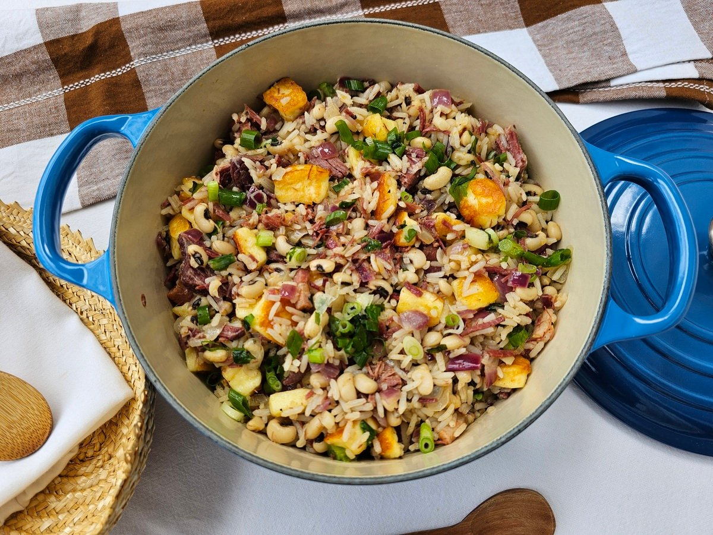

BAIÃO DE DOIS

O feijão com arroz é uma mistura tradicional da culinária brasileira. O baião de dois pega esses dois ingredientes e eleva eles ao máximo. Um prato muito tradicional no Nordeste brasileiro e amado em todo o país! A receita original do Ceará leva feijão fradinho, arroz, queijo coalho, carne de sol e manteiga de garrafa. Com o passar do tempo, algumas substituições foram sendo feitas para se adequar aos ingredientes disponíveis na região. Mas nem por isso o baião de dois perde o seu sabor. O grande segredo aqui é cozinhar o arroz no caldo do cozimento do feijão, junto com os outros ingredientes. Assim, o arroz irá absorver o sabor de todos, deixando o prato delicioso. Depois de desligar o fogo, você adiciona o queijo fatiado e deixa que o calor da panela o derreta. Veja como fazer essa receita de baião de dois e capriche na sua próxima refeição!
Ingredientes
- 1/2 kg de feijão verde.
- 2 tabletes de caldo de carne.
- 1 dente de alho amassado.
- 1/2 colher (sopa) de coentro picado.
- 150 g de queijo de coalho cortado em fatias finas.
- 1 paio cortado em rodelas.
- 1 cebola ralada.
- 3 colheres (sopa) de óleo.
- 2 xícaras e 1/2 (chá) de arroz lavado e escorrido.
Modo de Preparo
- Deixe o feijão de molho de véspera.
- No dia seguinte cozinhe-o juntamente com o caldo de carne e 2,5 litros de água fria.
- Tampe a panela e deixe cozinhar em fogo baixo por aproximadamente 1 hora.
- Em outra panela doure o paio, a cebola e o alho, no óleo.
- Junte o coentro e o arroz e refogue bem.
- Acrescente o feijão já cozido, juntamente com o caldo. Misture bem, tampe a panela e deixe cozinhar até que o arroz fique cozido, úmido e com consistência cremosa.
- Cubra o arroz com as fatias de queijo. Tampe a panela novamente e deixe que o vapor derreta o queijo.
- Sirva acompanhado de carne-de-sol frita ou assada.